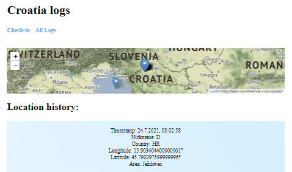

Student | Developer | Learner
...do I build stuff?
Still vanilla JS combined with HTML and CSS. Also lives behind this web resume.
Very interesting and developer-friendly JS component framework. First bigger project in progress!
First backend experience. Since I already use JS, it seemed like an easy transition from frontend to backend.
Scripting language for Windows. Started using it for keyboard configuration, ended up building my first project with it.
...do I build?
2021.
Find out Your geolocation and get weather and air quality data for the location. You can also see where others have checked-in on the map.
A simple app for boosting productivity for Helpdesk agents. It provides better UX with visual cues, autocomplete options and school search via pop-up.
2020.
My first solo project. GUI mail composer + webscraper using AutoHotkey mixed with JavaScript. Made for job purposes.

Internal knowledge base/web. I was tired of using old internal web. Then I got tired of myself complaining about it. WordPress came perfectly.

...am I?
graduating in Informatics but mostly self-taught.
Help Desk Technician at CARNET.
huge fan of self-improvment mindset.
won tickets to UEFA Euro 2016 in a prize game for looking like Modrić. SEE PHOTO
love playing football, philosophy, Balašević's music, lake Jarun, hiking (37min. Bikča).
COVID-19 vaccinated.
| am looking for an internship or an entry-level job and a chance to prove myself.

...can You find me?
{kind=link}